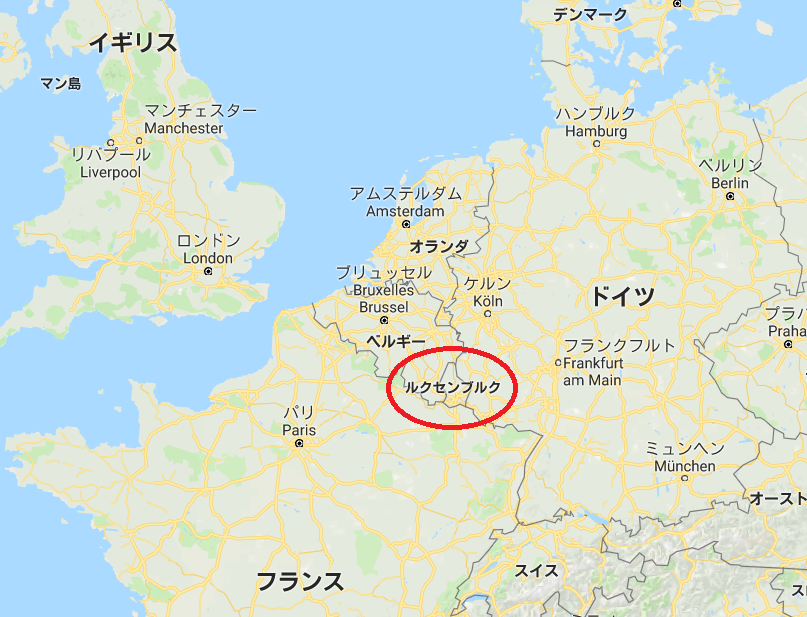
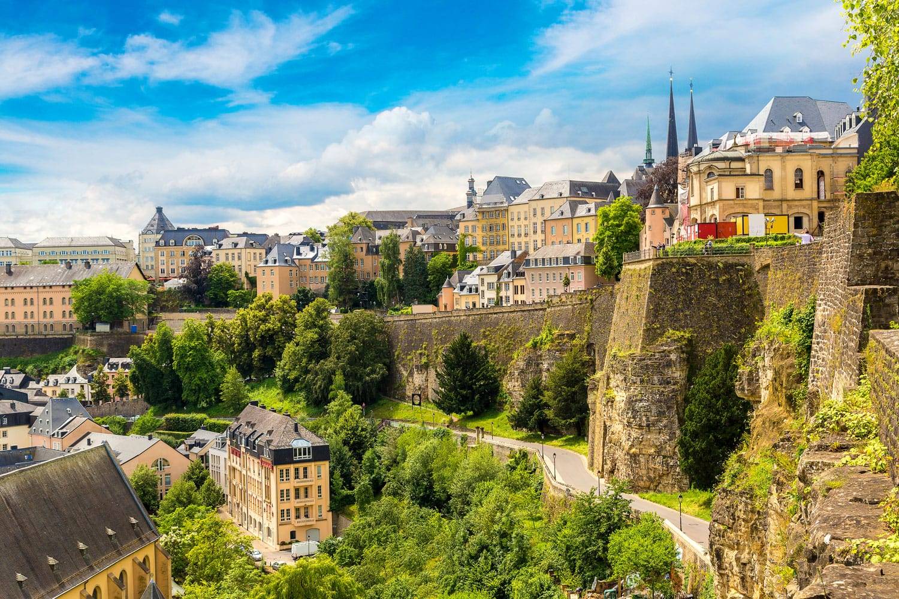
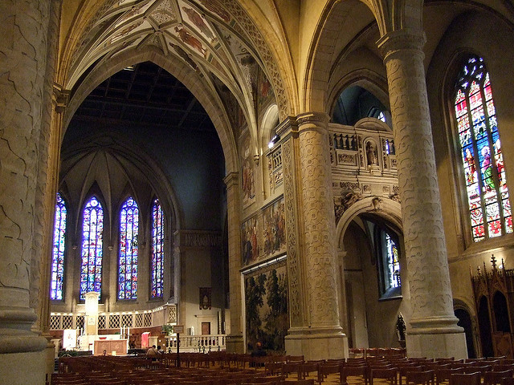
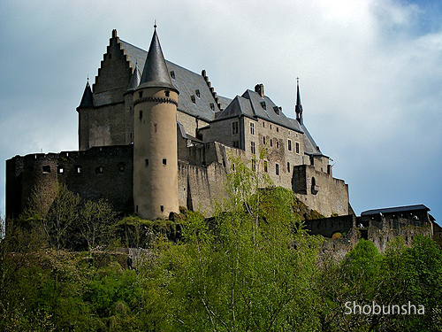
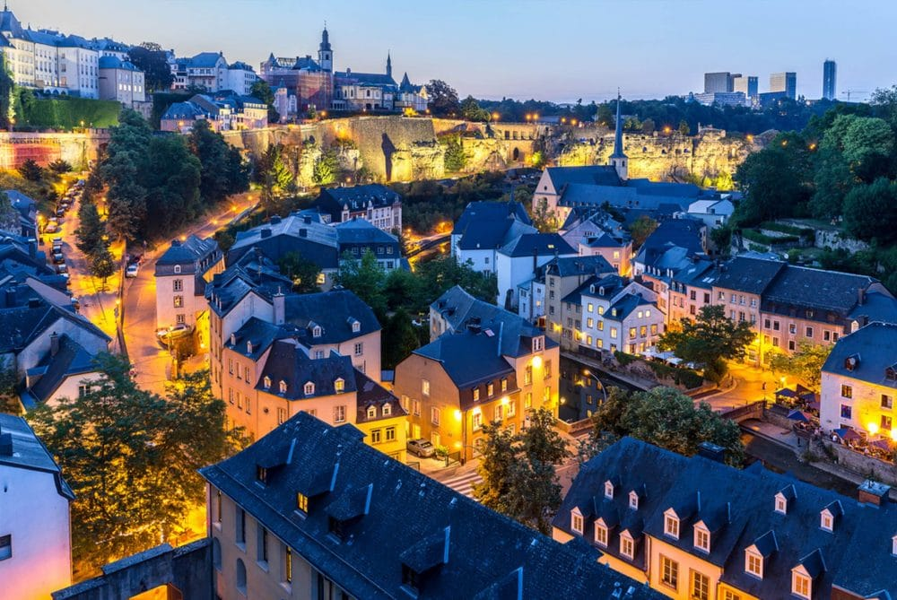
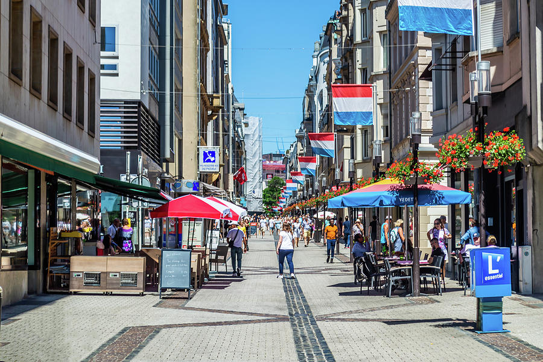
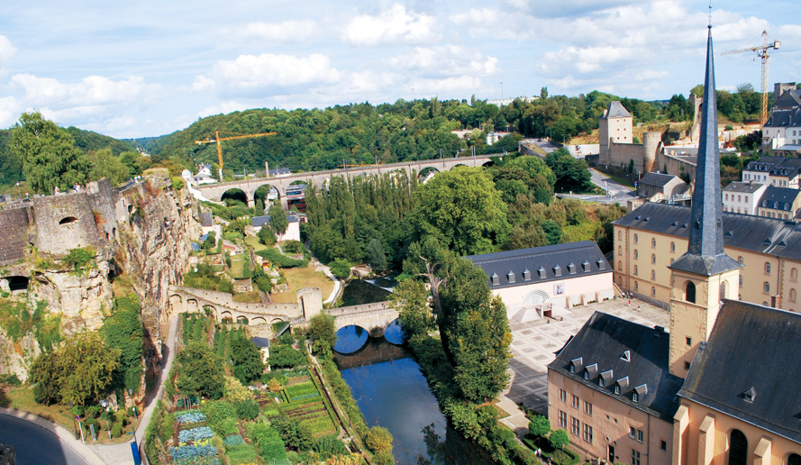
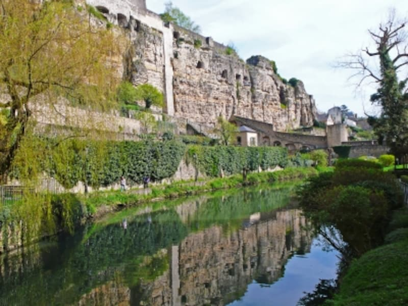

ベルギー・フランス・ドイツに囲まれた西ヨーロッパの小さな内陸国。 
一人当たりのGDPが世界トップクラスの裕福な国。経済格差が北欧諸国並みに小さい。市街にはノートルダム大聖堂や宮殿、多くの古城が見られ、おとぎ話のなかの国のようだといわれている。
|  |  |  |
断崖を利用した城壁と川が蛇行する地形から、難攻不落だった城砦が残っている。別名「森と渓谷の国」。古い城跡などが残り、おとぎ話のような世界観が楽しめる一方、中心部はブランドショップが立ち並び、観光客が買い物に訪れることも。
|  |  |
第二次世界大戦後は、オランダ・ベルギーとともにベネルクス三国を形成して、積極的にヨーロッパ統合に加わった。４８年にはベネルクス三国の関税同盟を結成、その後のヨーロッパ石炭鉄鋼共同体（ＥＣＳＣ）、欧州経済共同体（ＥＥＣ）、ヨーロッパ共同体（ＥＣ）、ヨーロッパ連合（ＥＵ）でも積極的な推進役となって現在に至っている。
首都ルクセンブルク市の旧市街と要塞は、世界遺産に指定されている。10世紀に断崖を利用した天然の要塞が誕生し、14~15世紀には市を囲む「ヴェンチェルの環状要塞」が建設された。
|  |  |
9「産業と技術革新の基盤をつくろう」
2021年に行われた国際宇宙会議にて、ルクセンブルクが宇宙資源に特化したスタートアップ支援プログラムを発表した。ルクセンブルク宇宙庁とルクセンブルク科学技術研究所を中心に2020年に設立された、ESRIC(European Space Resources Innovasion Centre)は宇宙資源分野の研究のほか、官民連携や新たな取り組みを促進することが目的とされている。